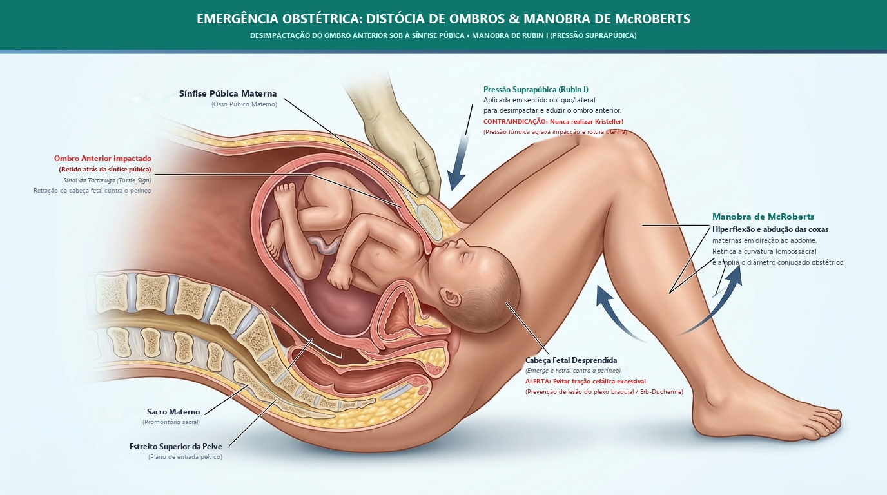
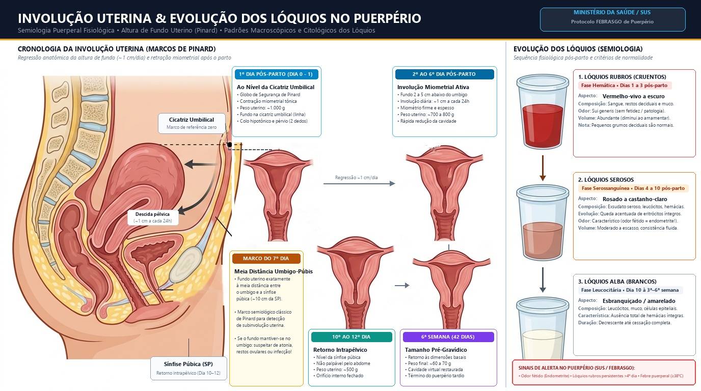
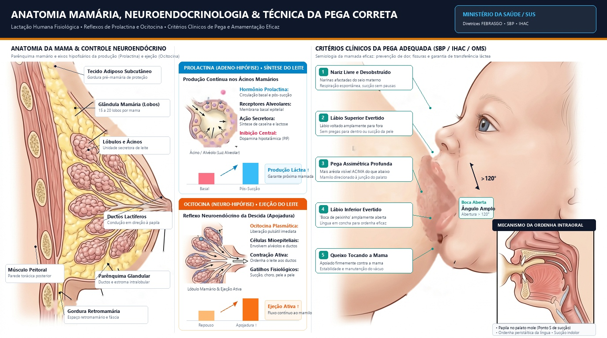

Trabalho de Parto & Os 7 Movimentos Cardinais
O trabalho de parto é como abrir uma porta pesada com mola: o útero é a mola forte que empurra o bebê contra a porta (o colo). Cada contração empurra um pouquinho, e a portinha vai abrindo devagar. Quando a porta abre totalmente (10 centímetros), o bebê faz uma dancinha mágica girando a cabeça como uma chave na fechadura até achar o caminho para sair!
Diagnóstico Diferencial: Trabalho de Parto Verdadeiro vs Falso (Braxton Hicks)
| Característica | Trabalho de Parto Verdadeiro | Falso Trabalho de Parto (Braxton Hicks) |
|---|---|---|
| Regularidade das Contrações | Regulares, com intervalos decrescentes | Irregulares, espaçadas sem padrão |
| Intensidade e Duração | Progressivamente mais intensas e duradouras | Sem progressão de força ou duração |
| Irradiação da Dor | Inicia no dorso e irradia para abdome anterior | Restrita ao abdome anterior ou baixo ventre |
| Efeito da Deambulação / Repouso | Mantém ou intensifica o padrão | Alivia com deambulação, repouso ou banho morno |
| Modificação Cervical (Colo) | SIM: Apagamento progressivo e dilatação | NÃO: Colo grosso, posterior e fechado |
Fase Latente: 0 a 6 cm (lenta, até 20h em nulíparas).
Fase Ativa: 6 a 10 cm (rápida, ≥ 1 cm/h segundo Zhang/ACOG).
Da dilatação total (10 cm) até o nascimento fetal. Arresto de Descida (ACOG 2024): > 3h de esforço expulsivo ativo em nulíparas ou > 2h em multíparas com contrações adequadas. Puxos espontâneos (reflexo de Ferguson).
Expulsão da placenta (até 30 min). Baudelocque-Schultze (75% - face fetal primeiro) vs Baudelocque-Duncan (25% - face materna).
Primeira hora pós-parto. Maior risco de atonia e HPP. Vigilância do Globo de Segurança de Pinard e sinais vitais.

Sequência Rigorosa dos 7 Movimentos Cardinais (USMLE Mnemonic)
Partograma da OMS & Diagnóstico de Distocias
O partograma é como o mapa com velocímetro do parto. Ele tem duas linhas guias desenhadas na folha: a linha amarela (Alerta) e a linha vermelha (Ação). Se o barquinho do bebê navegar devagar demais e bater na linha vermelha, o médico sabe que o parto "emperrou" e precisa intervir para ajudar o bebê a nascer logo e seguro!

Curvas de Partograma em Tempo Real
Início da fase ativa em 6 cm. Progressão rápida e constante a ≥ 1 cm/h, mantendo-se à esquerda da Linha de Alerta.
Critérios Rígidos de Parada de Dilatação — 1º Período (ACOG / USMLE Gold Standard)
Para fechar diagnóstico de falha de progressão da fase ativa (indicação de cesárea), é obrigatório preencher TODOS os seguintes requisitos prévios:
Arresto de Descida no 2º Período (Período Expulsivo Prolongado — ACOG 2024)
• Conduta: Se apresentação insinuada (plano ≥ +2 de De Lee), variedade de posição conhecida e pelve compatível ➔ Parto operatório com fórceps de alívio ou vácuo-extrator. Caso contrário ou suspeita de DCP ➔ Cesariana intraparto.
Líquido Amniótico Meconial (NRP 2020/2024 / SBP)
Profilaxia Intraparto para GBS (FEBRASGO / CDC)
• Indicações: Cultura retovaginal positiva com 35-37 semanas, bacteriúria por GBS na gestação atual ou histórico de filho anterior com sepse por GBS.
• Esquema Padrão-Ouro: Penicilina G Cristalina: 5 milhões de UI EV (dose de ataque) + 2,5 a 3 milhões de UI EV a cada 4 horas até o nascimento (alternativa: Ampicilina 2g EV ataque + 1g EV 4/4h).
Analgesia e Anestesia Obstétrica
A dor do parto é como subir uma montanha bem íngreme. A analgesia neuroaxial é como ter um elevador suave que tira a dor das contrações, mas mantém a mamãe acordada, consciente e pronta para fazer força e abraçar o bebê assim que ele nascer!
| Método Analgésico | Técnica & Nível Anatômico | Vantagens Clínicas | Efeitos Adversos & Cuidados |
|---|---|---|---|
| Peridural (Epidural) | Cateter contínuo no espaço peridural lombar (L3-L4 ou L4-L5) | Padrão-ouro no TP; excelente analgesia titulável com mãe consciente | Hipotensão arterial (bloqueio simpático), retenção urinária, prolongamento do 2º período, cefaleia se punção acidental da dura-máter |
| Raquidiana (Subaracnóidea) | Punção única no espaço subaracnóideo (líquor) | Início imediato, baixa dose de anestésico, ideal para cesariana eletiva/urgência | Duração limitada (~2h), hipotensão súbita, cefaleia pós-punção dural (agulha de calibre fino reduz risco) |
| Combinada (Raqui-Peri) | Dose subaracnóidea inicial + passagem de cateter peridural | Alívio instantâneo da dor (fase ativa avançada) + manutenção contínua | Prurido transitório (opioide intratecal) e maior complexidade técnica |
| Bloqueio do Nervo Pudendo | Infiltração transvaginal junto às espinhas isquiáticas (S2-S4) | Excelente para períneo no 2º período, episiotomia, episiorrafia e fórceps de alívio | Não alivia a dor das contrações uterinas (T10-L1) |
| Opioides Sistêmicos (IV/PCA) | Remifentanil (PCA), Fentanil ou Meperidina IV/IM | Alternativa quando neurobloco é contraindicado (ex.: coagulopatia grave) | Depressão respiratória neonatal (antídoto: Naloxona), sedação materna e redução da variabilidade da FCF |
Contraindicações ao Bloqueio Neuroaxial:
- • Recusa materna: Contraindicação absoluta.
- • Coagulopatia / Plaquetopenia: Plaquetas < 70.000 a 80.000/mm³ (ex.: síndrome HELLP) ou uso recente de HBPM (suspender 12h antes se profilática ou 24h antes se terapêutica).
- • Hipovolemia materna não corrigida ou choque hemorrágico ativo.
- • Infecção ativa no sítio de punção lombar ou hipertensão intracraniana.
Complicações Clássicas de Prova (USMLE):
- • Hipotensão pós-bloqueio: Vasodilatação por bloqueio simpático ➔ Conduta: Decúbito lateral esquerdo, cristaloide EV e Fenilefrina ou Efedrina EV.
- • Cefaleia Pós-Punção Dural: Cefaleia fronto-occipital bilateral que piora em ortostase e melhora no decúbito dorsal. Conduta inicial: repouso, hidratação, cafeína/analgésicos; se refratária (> 24-48h) ➔ Tampão Sanguíneo Peridural (Epidural Blood Patch) autólogo.
Assistência ao Parto Humanizado, Episiotomia & Clampeamento
O parto humanizado é tratar o nascimento com respeito, ciência e carinho: a mamãe pode escolher quem fica ao lado dela, caminhar, beber água, escolher a posição mais confortável e segurar o bebê pele a pele logo ao nascer, esperando o cordãozinho parar de pulsar!
Práticas Recomendadas (OMS / MS):
- • Acompanhante de livre escolha da gestante durante todo o pré-parto, parto e pós-parto (Lei Federal nº 11.108/2005).
- • Liberdade de posição e deambulação no trabalho de parto e escolha de posição verticalizada no expulsivo.
- • Oferta de líquidos orais e dieta leve em gestantes de risco habitual.
- • Métodos não farmacológicos de alívio da dor: banho morno de aspersão, bola suíça, massagem lombossacra e suporte contínuo.
- • Clampeamento oportuno/tardio do cordão (1 a 3 min): aumenta reservas de ferro e reduz anemia infantil e hemorragia intraventricular em prematuros.
- • Contato pele a pele imediato e amamentação na 1ª hora de vida (Golden Hour).
Práticas Proscritas / Não Recomendadas de Rotina:
- • Manobra de Kristeller: PROSCRITA! Associada a rotura uterina, DPP, trauma perineal grave e lesão fetal.
- • Episiotomia de rotina: Uso deve ser estritamente seletivo/restritivo (sofrimento fetal agudo ou parto operatório com períneo rígido). Quando indicada, a técnica médio-lateral tem menor risco de laceração de 3º e 4º graus (OASIS) que a mediana.
- • Enema (enteroclisma) e Tricotomia perineal de rotina.
- • Amniotomia precoce isolada ou Ocitocina de rotina em trabalho de parto com progressão fisiológica.
- • Cardiotocografia contínua de rotina em gestação de baixo risco (preferir ausculta intermitente a cada 15-30 min na fase ativa e a cada 5 min no expulsivo).
Distócia de Ombros & O Algoritmo HELPERR
A distócia de ombros é como tentar tirar uma rolha gordinha de dentro de uma garrafa: a pontinha saiu (a cabeça do bebê), mas os bracinhos ficaram travados atrás do osso duro da mamãe (sínfise púbica). O médico não pode puxar a cabeça com força para não machucar o pescocinho! Em vez disso, dobra as pernas da mamãe bem para cima (McRoberts) e aperta em cima do osso para destravar o ombrinho!

Algoritmo Mnemônico HELPERR
Gritar código de distócia! Convocar obstetra, neonatologista, anestesista e enfermagem. Disparar cronômetro imediatamente (meta: parto < 3 min).
Avaliar episiotomia ampla médio-lateral para facilitar acesso das mãos nas manobras internas. Atenção: episiotomia não desimpacta o osso púbico!
Simultânea à pressão suprapúbica: Hiperflexão e abdução forçada das coxas maternas contra o abdome. Retifica a curvatura sacral e alarga a pelve anterior.
Manobra de Rubin I: Pressão na região suprapúbica a 45° oblíqua no dorso do ombro anterior para aduzi-lo sob a sínfise. NUNCA realizar pressão no fundo uterino!
1ª Escolha de 2ª linha se ombro posterior acessível (DGGG 2024 / FEBRASGO): Introduzir a mão, flexionar o cotovelo e capturar a mão fetal, tracionando o braço sobre a face anterior do tórax para fora da vagina. Reduz o diâmetro biacromial imediatamente.
Se ombro posterior NÃO acessível:
• Rubin II: Pressão com 2 dedos na face posterior do ombro anterior para aduzi-lo.
• Woods Corkscrew (Saca-rolhas): Rotação do ombro posterior em 180° com pressão na face anterior.
• Woods Reverso: Rotação em sentido anti-horário se houver resistência.
Virar a parturiente em posição genupeitoral / quatro apoios. A força gravitacional e a ampliação da curvatura conjugada sacral favorecem o desprendimento do ombro posterior.
• Manobra de Zavanelli: Flexão e reintrodução da cabeça fetal no canal de parto seguida de cesariana de emergência imediata.
• Fratura Deliberada da Clavícula: Tração anterior da clavícula contra o púbis para colabar o diâmetro biacromial.
• Resgate Abdominal / Histerotomia: Desimpactação manual transabdominal associada a parto vaginal.
Manobras Proibidas (Never Events)
- • Manobra de Kristeller (Pressão no Fundo Uterino): FORMALMENTE PROIBIDA! Aumenta a impactação óssea contra a sínfise, causa rotura uterina grave e descolamento prematuro de placenta.
- • Tração axial/lateral vigorosa no pescoço ou torção cervical: Causa estiramento do plexo braquial com paralisia irreversível de Erb-Duchenne (C5-C6) ou Klumpke (C8-T1).
- • Rotação forçada da cabeça: Risco de fratura de vértebras cervicais e lesão medular alta (tetraplegia).
- • Repetição de manobra que falhou por > 2 vezes: Não perca tempo! Passe imediatamente para a próxima camada.
Registro Obrigatório no Prontuário (Medicolegal)
- • Cronologia Exata: Horário exato do desprendimento cefálico e momento do nascimento completo (tempo total de distócia).
- • Sequenciamento de Manobras: Registrar detalhadamente cada manobra executada em ordem cronológica e a resposta obtida.
- • Força Empregada: Descrever que foi aplicada tração cefálica suave/moderada, sem pressão fúndica.
- • Avaliação Neonatal Imediata: Boletim de Apgar (1', 5' e 10'), gasometria arterial de cordão (pH, BE) e exame dos membros superiores (Moro simétrico, preensão palmar, movimentação espontânea).
- • Debriefing & Comunicação: Registro de esclarecimento fornecido à puérpera e acompanhante pela equipe obstétrica e pediátrica.
Indicações Formais de Cesariana Eletiva / Urgência:
- ⚠️ VASA PRÉVIA: Indicação ABSOLUTA de cesariana eletiva programada entre 34 e 36 semanas. Se as membranas romperem, os vasos fetais desprotegidos laceram, levando à exsanguinação fetal e óbito em minutos!
- • Placenta Prévia Centro-Total ou Centro-Parcial: Risco hemorrágico materno catastrófico.
- • Descolamento Prematuro de Placenta (DPP) com feto vivo: Cesariana de urgência imediata.
- • Prolapso de Cordão Umbilical: Manter rechaço manual da apresentação e cesariana estourando o tempo.
- • Apresentação Córmica / Transversa e Fronte Defletida: Impossibilidade mecânica de parto vaginal.
- • Herpes Genital Ativo com Lesões no Canal de Parto: Prevenção de infecção neonatal grave.
Condições Obrigatórias para Parto Operatório (Fórceps / Vácuo):
- • Dilatação Cervical Total (10 cm): Nunca aplicar fórceps com colo incompleto.
- • Bolsa Rota: Membranas amnióticas rotas antes da apreensão.
- • Apresentação Cefálica Fletida e Insinuada: Pelo menos plano +2 de De Lee (fórceps médio/baixo/saída).
- • Variedade de Posição Rigorosamente Conhecida: Essencial para posicionamento das colheres (ex.: Simpson para variedades anteriores; Kielland para rotação se operador experiente).
- • Desproporção Cefalopélvica Afastada: Bacia compatível com volume cefálico.
- • Bexiga Vazia & Analgesia Adequada: Sondagem vesical de alívio prévia obrigatória.
Hemorragia Pós-Parto (HPP): Algoritmo dos 4 T's, Balão & Manobras de Resgate
Protocolo sequencial de atendimento da OPAS/OMS, Zugaib Obstetrícia (2020) e condutas na Atonia e Inversão Uterina.
Depois que o bebê nasce, o útero precisa apertar como um punho bem fechado para fechar as torneirinhas de sangue onde a placenta estava colada. Pelo útero passa uma cachoeira de 600 mL de sangue por minuto! Se ele ficar cansado e molenga como uma massinha (atonia), o sangue vaza muito rápido. Para salvar a mamãe, a gente aperta o útero com as mãos, dá remédios para ele ficar durinho de novo e coloca uma bexiguinha de água lá dentro (o Balão de Bakri) para tampar o sangramento por dentro!
Critério Quantitativo & Hemodinâmico
Perda sanguínea cumulativa ≥ 500 mL no parto vaginal ou ≥ 1.000 mL na cesariana nas primeiras 24 horas OU qualquer sangramento (mesmo ≥ 300 mL) acompanhado de instabilidade hemodinâmica ou sinais de hipovolemia (Índice de Choque ≥ 0,9, hipotensão, taquicardia, palidez cutânea, oligúria).
Fluxo: 600 mL/min
O fluxo sanguíneo uteroplacentário a termo atinge ~600 mL por minuto (cerca de 10% a 15% do débito cardíaco materno). A atonia uterina pode levar à perda de toda a volemia materna em menos de 10 minutos se não contida!
Primária vs Secundária
• Primária ou Precoce: Ocorre nas primeiras 24 horas pós-parto (principalmente atonia, lacerações e inversão).
• Secundária ou Tardia: De > 24 horas até 6 a 12 semanas (principalmente restos placentários e endometrite).
Causa nº 1 no mundo. Útero amolecido, sem globo de Pinard pós-sobredistensão ou parto prolongado.
Laceração de colo, vagina, períneo 3º/4º grau, rotura uterina e inversão uterina aguda.
Cotilédones retidos ou acretismo. Atenção: Cesárea prévia + placenta prévia = USG Doppler e RNM obrigatórios para planejar cesárea-histerectomia!
CIVD secundária a DPP, embolia amniótica, HELLP syndrome, sepse ou uso de anticoagulantes.

Calculadora do Índice de Choque Obstétrico & Conduta
Índice de Choque (FC / PAS): preditor mais precoce e sensível de necessidade transfusional que a PA isolada.
Sequenciamento do Atendimento da Hemorragia Pós-Parto (Passos A a H)
Manejo padronizado e cronológico por etapas para prevenção e controle do choque hemorrágico obstétrico:
Ajuda / Avaliação Inicial
- • Verbalização clara: Comunicar o diagnóstico em voz alta para a equipe e o acompanhante.
- • Convocar equipe: Chamar imediatamente obstetra/hospitalista, anestesista, enfermeiro e técnico.
- • Estimar perda volêmica: Avaliar sinais vitais, perda visual e calcular o Índice de Choque (FC/PAS).
- • Rastreio dos 4 T's: Tônus uterino, Tecido retido, Trauma do canal de parto e Trombina.
Básico / Medidas Gerais Iniciais
- • 2 acessos venosos calibrosos: Jelco 14 ou 16 com infusão de SF 0,9% aquecido.
- • Oxigenoterapia: Máscara facial com reservatório a 8-10 L/min.
- • Posicionamento & Sonda: Trendelenburg e Sondagem Vesical de Demora (Foley).
- • Laboratório imediato: Hemograma, coagulograma, fibrinogênio, prova cruzada, tipagem, lactato e gasometria.
Controle da Volemia / Reposição
- • Índice de Choque ≥ 0,9: Forte indicativo de transfusão sanguínea precoce.
- • Infusão de Cristaloide: Reavaliar resposta hemodinâmica a cada 500 mL infundidos.
- • Transfusão: Se instabilidade mantida ou após 1.500 mL de cristaloides (evitar hemodiluição e hipotermia).
Determinar Etiologia (4T's)
- • Tônus: Palpação uterina bimanual (identificar atonia).
- • Tecido: Revisão da cavidade uterina à procura de restos placentários retidos.
- • Trajeto/Trauma: Exame especular minucioso do colo, vagina e períneo (hematomas/lacerações).
- • Trombina: Avaliar história pregressa ou coagulopatia de consumo (CIVD).
Específicos & Adjuvantes de 1ª Linha
- • Tratar causa primária imediatamente: Suturar lacerações de trajeto sob boa luz, curagem/AMIU de restos ou uterotônicos na atonia.
- • Ácido Tranexâmico (TXA) Coadjuvante Precoce: 1g EV em 10 minutos nas primeiras 3 horas do parto (WOMAN trial / OMS 2024). Repetir 1g após 30 min se sangramento persistir. Reduz em mais de 30% a mortalidade por sangramento.
Foco na Atonia — Escada Farmacológica Atualizada
- • 1º: Compressão Bimanual (Hamilton): Imediata enquanto as medicações são preparadas (punho no fundo de saco vaginal anterior fletindo o corpo uterino contra o púbis).
- • 2º: Ocitocina: 5 UI EV lento (3 min) + 20 a 40 UI em 500-1000 mL SF/RL a 125-250 mL/h. Evitar bolus rápido > 5 UI (risco de hipotensão súbita e taquicardia reflexa).
- • 3º: Carbetocina 100 µg IV/IM dose única: Preferida em cesariana (meia-vida prolongada de 40 a 80 min vs 3-5 min da ocitocina). Excelente alternativa precoce; dispensa infusão contínua.
- • 4º: Metilergometrina 0,2 mg IM: Repetir q2-4h (máx. 5 doses/24h). CONTRAINDICADA em hipertensão/pré-eclâmpsia (risco de crise hipertensiva/AVC). Monitorar PA a cada 15 min.
- • 5º: Misoprostol 800 µg retal (ou 600 µg SL). Cautela em cesárea prévia pelo risco de rotura em caso de deiscência não diagnosticada.
- • 6º: Balão de Bakri / Tamponamento: Se falha farmacológica; insuflar 300 a 500 mL SF morno; permanência máxima de 24h; antibioticoprofilaxia com Cefazolina 2g EV 8/8h. Drenagem > 50 mL/h indica falha mecânica ➔ cirurgia!
Geral: Hemoterapia Guiada por Metas
- • Prevenção da Tríade Letal: Manta térmica e infusões aquecidas (evitar hipotermia < 35°C, acidose pH < 7,20 e coagulopatia).
- • Protocolo de Transfusão Maciça (1:1:1): Se Índice de Choque ≥ 1,3 ou perda > 1500 mL, infundir Concentrado de Hemácias, Plasma Fresco e Plaquetas na proporção 1:1:1.
- • Gatilho Crítico de Fibrinogênio (< 200 mg/dL): Em perda > 1500 mL, solicitar fibrinogênio urgente. Se < 200 mg/dL (< 2 g/L), infundir imediatamente Crioprecipitado (10 bolsas ou 1 bolsa a cada 10 kg).
Tratamento Cirúrgico & Resgate
- • Traje Antichoque Não Pneumático (TANP): Estabilização hemodinâmica para transporte e sala de cirurgia.
- • Suturas Compressivas Miometriais: B-Lynch (tipo suspensório), Cho ou Hayman para hemostasia conservadora.
- • Ligadura Vascular Bilateral: Artérias uterinas (técnica de Posadas / O'Leary) e ilíacas internas (hipogástricas).
- • Histerectomia Oportuna: Não apenas último recurso tardio — em placenta percreta diagnosticada previamente, a cesárea-histerectomia programada (sem tentar descolar a placenta) é mandatória para salvar a vida materna.
Manobras Especiais de Resgate: Hamilton, B-Lynch & Manobra de Taxe
Compressão Bimanual (Hamilton)
Com uma mão enluvada em punho fechado introduzida no fundo de saco anterior da vagina e a outra mão sobre o abdome fletindo o corpo uterino para a frente contra a sínfise púbica. Mantém a compressão mecânica direta dos vasos miometriais até o efeito dos uterotônicos.
Sutura Compressiva de B-Lynch
Técnica de laparotomia com fio monofilamentar espesso (Catgut cromado nº 2 ou poliglactina) que contorna as paredes anterior e posterior do útero como um suspensório elástico, comprimindo fortemente as paredes uterinas. Preserva a fertilidade e evita a histerectomia.
Manobra de Taxe (Johnson)
Emergência rara associada à tração excessiva do cordão com útero hipotônico:
• Passo A: O fundo invertido é recolocado para dentro da cavidade através do colo.
• Passo B: Pressão com a palma da mão na direção da cicatriz umbilical.
• Passo C: Mantém-se o punho na cavidade até contração uterina plena com ocitocina.
Puerpério Fisiológico: Fases, Involução & Adaptações Sistêmicas
Definições, anatomia, fisiologia multissistêmica e assistência pós-natal baseada em Zugaib Obstetrícia (2020) & FEBRASGO.
Depois que o bebê nasce, o corpo da mamãe começa a arrumar a casinha. O útero que estava gigante vai encolhendo cerca de 1 centímetro por dia até caber de volta escondidinho dentro da bacia. A sujeirinha que sai vai mudando de cor: primeiro vermelha como groselha (lóquios rubros), depois cor-de-rosa clarinho (serosos) e por fim branquinha como leite de coco (albos). E o leitinho desce lá pelo 3º dia, com o corpo da mamãe ficando quentinho para acolher o bebê!
As 4 Fases Cronológicas do Puerpério
Período clássico: 6 semanas (42 dias) · Extensível até 12 meses pós-partoPuerpério Imediato
Até o término da 2ª hora pós-parto (4º período do parto / Período de Greenberg). Fase crítica de hemostasia uterina (ligaduras vivas de Pinard) e maior risco de choque por atonia.
Puerpério Mediato
Do início da 3ª hora até o 10º dia pós-parto. Ocorre a apojadura láctea (48-72h), intensa involução uterina (~1 cm/dia), alta hospitalar e transição dos lóquios de rubros a serosos.
Puerpério Tardio
Do 11º até o 42º dia (6 semanas). Útero torna-se órgão intrapélvico (rente à sínfise púbica no 12º dia), lóquios albos e regeneração endometrial basal completa.
Puerpério Remoto
Além da 6ª semana. Estudos modernos estendem este período até 12 meses pós-parto para adaptação metabólica, psíquica, cardiovascular e amamentação prolongada.

Linha do Tempo Fisiológica & Involução Puerperal
Selecione o momento pós-parto para visualizar todas as alterações anatômicas, hormonais e hematológicas:
Trato Genital Feminino
Nível da cicatriz umbilical; Globo de Segurança de Pinard firme. Regressão diária de cerca de 1 cm ao dia.
Dilatação residual de 2 a 3 cm; amolecido. Orifício externo: aspecto puntiforme na nulípara vs em fenda na multípara.
Epitélio vaginal atrófico (hipoestrogenismo transitório nos primeiros 15 dias). Diâmetros reduzindo gradativamente.
Lóquios & Mamas
Lóquios Rubros (avermelhados, com sangue e fragmentos deciduais). Odor característico não fétido.
Colostro presente desde o parto. Apojadura ocorre entre o 1º e 3º dia pós-parto com hiperemia e ingurgitamento fisiológico.
Elevação térmica fisiológica dura < 48h. Na apojadura a temperatura deve permanecer < 39ºC.
Adaptações Sistêmicas & Peso
↑ Débito cardíaco e volume plasmático no imediato (normaliza em 1-2 sem). Leucocitose fisiológica de até 30.000/mm³ sem desvio para esquerda.
Hipotonia de bexiga e ureteres regride em 2-8 semanas. TFG e clearance normalizam nas primeiras 2 semanas. Pode haver incontinência transitória.
Perda imediata de 5-6 kg (feto, placenta, LA) + 1-2 kg de líquido. Retorno ao peso pré-gestacional no 6º mês. Baby blues surge ao 3º dia e cessa ao 14º dia.
Persistência de lóquios avermelhados após 2 semanas + Subinvolução uterina = RESTOS PLACENTÁRIOS!
Nesta situação, o colo permanece entreaberto, o útero não atinge a sínfise púbica e há risco eminente de hemorragia secundária e endometrite. Conduta imediata: Ultrassonografia pélvica, antibioticoterapia e esvaziamento uterino (AMIU ou curetagem cuidadosa).
Protocolo de Assistência Pós-Natal & Planejamento Reprodutivo
• Exercícios Leves / Caminhadas: Permitidos a partir de 2 a 3 semanas se parto sem intercorrências.
• Exercícios de Impacto / Cargas: Liberar após 4 a 6 semanas no parto normal ou 6 a 8 semanas na cesariana (cicatrização aponeurótica).
• Atividade Sexual: Individualizada entre 4 e 6 semanas (após cicatrização perineal completa e cessação de lóquios rubros; usar lubrificante aquoso devido ao hipoestrogenismo da lactação).
Aleitamento Materno: Neuroendocrinologia, Composição & Contraindicações
Fisiologia da lactação, composição biomolecular do colostro vs leite maduro e inibição farmacológica.
Na fábrica do leite da mamãe trabalham dois ajudantes mágicos: a Prolactina é a cozinheira que fabrica o leite dentro das panelinhas (alvéolos). A Ocitocina é o garçom que aperta as panelinhas para espirrar o leite na boquinha do bebê! O primeiro leite é o Colostro, uma gotinha dourada cheia de escudos protetores (anticorpos). Depois de 3 dias, chega o leite maduro, docinho de lactose e perfeito para o bebê crescer forte!

Composição Biomolecular: Colostro vs Leite Maduro
Líquido amarelado e espesso já presente ao parto. Formulado para a imunidade precoce e colonização do trato gastrointestinal do recém-nascido.
- Maior teor de Proteínas: Rico em IgA secretória (escudo mucosal), lactoferrina e albumina.
- Rico em Minerais e Vitamina A: Confere a coloração dourada protetora da retina e epitélios.
- Menor concentração de Gorduras e Carboidratos: Adequado à baixa capacidade digestiva inicial do neonato.
Alimento balanceado completo com alta densidade calórica e osmolaridade perfeita para a hidratação e desenvolvimento encefálico.
Critérios da Pega Correta (Sem Dor):
- Boca bem aberta: Ângulo de abertura superior a 120°.
- Lábios evertidos: Lábio inferior voltado para fora ("boca de peixe").
- Pega assimétrica: Mais aréola visível acima do lábio superior do que abaixo.
- Queixo tocando a mama: Contato firme sem obstruir as narinas do recém-nascido.
- Bochechas arredondadas: Sem covinhas ou estalos durante a sucção.
Fisiologia Neuroendócrina (Slides 11 & 15):
• Sucção: Estímulo mecânico na aréola dispara reflexos neurais aferentes ao hipotálamo.
• Prolactina (Adeno-hipófise): Responsável pela síntese contínua do leite nos ácinos mamários.
• Ocitocina (Neuro-hipófise): Contrai as células mioepiteliais na ejeção ativa do leite e contrai o miométrio (cólicas puerperais hemostáticas).
• Inibição da Fertilidade: A hiperprolactinemia inibe a secreção pulsátil de GnRH ➔ inibe FSH e LH ➔ anovulação transitória.
Contraindicações à Amamentação & Inibição da Lactação
Diretrizes do Ministério da Saúde do Brasil, FEBRASGO, ACOG e CDC:
Contraindicações Formais à Amamentação (Brasil 2024)
- HTLV-1 / HTLV-2: CONTRAINDICAÇÃO ABSOLUTA inegociável no Brasil. Risco de leucemia/linfoma de células T e mielopatia (paraparesia espástica). Conduta: fórmula infantil exclusiva doada pelo SUS + inibição láctea.
-
HIV Materno: NÃO É MAIS TRATADO COMO PROIBIÇÃO BINÁRIA (Protocolo MS 2022/2024 / AAP 2024 / OMS).
• Recomendação Primária do SUS: Fórmula infantil + inibição com Cabergolina 1 mg VO dose única (máxima segurança, elimina o risco residual de 0,5-1%).
• Amamentação PERMITIDA sob Decisão Compartilhada se cumpridos TODOS os critérios de segurança:
1. Carga viral indetectável (< 50 cópias/mL) mantida no 3º trimestre;
2. Adesão documentada > 95% à TARV materno;
3. Monitoramento mensal da carga viral materna e trimestral do lactente;
4. Aleitamento materno exclusivo (proibição absoluta de alimentação mista);
5. Suspensão imediata se mastite clínica ou fissura com sangramento ativo. - • Erro Inato do Metabolismo Neonatal: Galactosemia clássica no RN (contraindicação absoluta por deficiência da galactose-1-fosfato uridiltransferase).
- • Uso de Drogas Ilícitas Ativas: Cocaína, crack, heroína, anfetaminas (excreção alta e risco de convulsão e neurotoxicidade no lactente).
- • Quimioterapia / Radioterapia Ativa: Citotóxicos e antimetabólicos (metotrexato, ciclofosfamida).
- • Lítio: Contraindicado (alto teor no leite materno, estreito índice terapêutico, hipotonia e toxicidade neonatal).
- • Amiodarona: Contraindicada (sobrecarga de iodo e meia-vida longa de até 100 dias com risco de hipotireoidismo e bócio neonatal).
- • Topiramato: Compatível com monitoramento clínico (baixa excreção no leite materno; acompanhar ganho ponderal e sonolência no RN).
Esquemas de Inibição Farmacológica
Indicada imediatamente pós-parto em casos de HIV/HTLV, óbito fetal, adoção ou contraindicação médica absoluta:
2 comprimidos de 0,5 mg (1,0 mg total), via oral, dose única nas primeiras 24 horas pós-parto. Agonista dopaminérgico potente com mínimos efeitos colaterais.
1,25 mg a 2,5 mg, via oral, a cada 8 a 12 horas, durante 10 a 14 dias consecutivos. Maior taxa de rebote e risco de hipertensão/náuseas.
Infecções Puerperais, Doenças Tromboembólicas & Transtornos Psiquiátricos
Critérios diagnósticos formais, espectro de complicações mamárias, TVP/TEP e rastreio com a Escala de Edimburgo (EPDS).
Diagnóstico Diferencial das Infecções Puerperais (Tabela Oficial)
Slide 35 · Zugaib 2020- • Classificação: Superficial (pele/subcutâneo) vs Profunda (aponeurose/músculo).
- • Sinais Clínicos: Sinais flogísticos locais (eritema, calor, edema, hiperestesia).
- • Febre: Tipicamente febre baixa (< 38,5°C).
- • Secreção: Deiscência de sutura, drenagem de exsudato purulento ou sero-hemático.
- • Tríade Clínica: Febre alta (≥ 38,5°C), dor/irritabilidade à palpação uterina e subinvolução uterina.
- • Colo Uterino: Colo aberto e pérvio após o 3º dia pós-parto.
- • Lóquios: Loquiação fétida e abundante (Atenção: infecção por Streptococcus pyogenes causa secreção serossanguinolenta sem odor!).
- • Microbiologia: Polimicrobiana (aeróbios + anaeróbios em 70%): GBS, Enterococcus, E. coli, Bacteroides, Peptostreptococcus.
- • Leucograma: Leucocitose importante (15.000 a 30.000/mm³) com desvio para esquerda.
1. Adicionar Ampicilina 2g EV 6/6h: Cobertura indispensável para Enterococcus faecalis e cepas de GBS resistentes à clindamicina.
2. USG Pélvica / TC com Contraste: Buscar abscesso pélvico intracavitário, restos placentários retidos ou Tromboflebite Séptica Pélvica (TSP).
3. Hemoculturas (2 pares): Coleta antes da troca de antimicrobianos.
4. Se abscesso > 5 cm: Drenagem percutânea guiada por imagem ou laparotomia.
5. Se Alergia Grave a Beta-lactâmicos: Vancomicina 15-20 mg/kg EV 12/12h + Aztreonam 2g EV 8/8h + Metronidazol 500 mg EV 8/8h.
- • Cronologia: Surge entre a 3ª e 4ª semanas pós-parto (muito rara anteparto).
- • Etiologia: Principal patógeno é o Staphylococcus aureus originário da nasofaringe do recém-nascido.
- • Sinais Clínicos: Eritema doloroso em cunha, calor local, ingurgitamento prévio e ducto lactífero bloqueado.
- • Febre & Calafrios: Febre com calafrios de início abrupto.
- • Conduta Vital: NÃO SUSPENDER O ALEITAMENTO! Esvaziamento mamário frequente com mamadas e ordenha.
Espectro Clínico das Alterações Mamárias no Puerpério
Ingurgitamento Mamário
Estase láctea súbita decorrente da apojadura em puérperas com bom estado geral. Mamas tensas, hiperdistendidas, hipertermia local e sistêmica. Conduta: ordenha de alívio e compressas frias após a mamada.
Fissuras Mamárias
Erosões alongadas dolorosas na base do mamilo decorrentes de pega inadequada do recém-nascido, má técnica ou ingurgitamento. Conduta: correção imediata da pega, banho de sol e espalhar o próprio leite na aréola.
Mastite Infecciosa
Invasão bacteriana (S. aureus) a partir de fissuras ou estase. Eritema em cunha, febre alta e calafrios. Conduta: Cefalexina ou Oxacilina + manter o esvaziamento contínuo das mamas.
Abscesso Mamário
Coleção purulenta encapsulada no parênquima mamário com flutuação à palpação. Complicação da mastite mal tratada. Conduta: Antibioticoterapia + Drenagem cirúrgica sob anestesia (ou punção guiada).
Tromboembolismo Venoso: Trombose Venosa Profunda (TVP) & Embolia Pulmonar (TEP)
O puerpério imediato e mediato concentra o maior risco de trombose por estase pélvica, trauma endotelial e hipercoagulabilidade:
Trombose Venosa Profunda (TVP)
MMII- • Sinais Clínicos: Dor súbita em membro inferior, edema assimétrico (diferença de empastamento da panturrilha > 2-3 cm).
- • Eritema e calor local: Sinal de Homans positivo (dor na panturrilha à dorsiflexão passiva do pé).
- • Exame Diagnóstico Padrão-Ouro: Dopplervelocimetria venosa com compressão dos membros inferiores.
Tromboembolismo Pulmonar (TEP)
Risco Fatal- • Sinais Clínicos: Dispneia súbita inexplicada, taquicardia materna, dor torácica de padrão pleurítico e escarros hemoptoicos.
- • Exames de Imagem: Angiotomografia Computadorizada (AngioTC) de tórax, Angiorressonância ou Cintilografia de Ventilação-Perfusão (V/Q).
Baby Blues vs Depressão Pós-Parto vs Psicose Puerperal (ECT)
Disforia Pós-Parto (Baby Blues)
Atinge até 80% das puérperas. Início no 3º dia e desaparece espontaneamente no 14º dia. Decorre de oscilação hormonal abrupta, fadiga, privação de sono e ansiedade sobre cuidar do recém-nascido. Conduta: suporte emocional e acolhimento familiar (não requer psicofármacos).
Depressão Pós-Parto (DPP)
Episódio de depressão maior surgindo nas primeiras 4 semanas pós-parto. Tristeza profunda, choro frequente, anedonia, culpa excessiva, falta de interesse pelos cuidados do RN, recusa à amamentação e afastamento afetivo.
• Tratamento: Terapia Cognitivo-Comportamental (TCC) + Farmacológico (ISRS: Sertralina de 1ª escolha pela baixa excreção no leite).
Indicações de ECT (Slide 37)
A Eletroconvulsoterapia (ECT) é indicada quando há necessidade de resposta terapêutica imediata e salvamento de vida em:
• Depressão grave com sintomas psicóticos ou catatonia;
• Episódios de mania aguda / psicose puerperal;
• Puérperas com risco iminente de suicídio ou infanticídio.
Síndrome de Sheehan (Necrose Hipofisária Isquêmica)
Consequência direta de hemorragia pós-parto volumosa (HPP) com choque hipovolêmico prolongado. A hipertrofia fisiológica da adeno-hipófise na gestação torna-a vulnerável ao colapso pressórico.
• Sinal Precoce Patognomônico (1º Sinal a Surgir): AGALACTIA PRECOCE (ausência total de apojadura e produção de leite por necrose precoce dos lactotrofos hipofisários), que antecede a amenorreia secundária, perda de pelos axilares/pubianos, hipotireoidismo e insuficiência adrenal crônica.
Escala de Depressão Pós-Parto de Edimburgo (EPDS)
Autoavaliação validada para detecção precoce de depressão pós-parto na atenção primária e hospitalar:
• Score ≥ 13: Ponto de corte com máxima acurácia para triagem positiva de Depressão Pós-Parto (indicação de psicoterapia e Sertralina).
• Score 10 a 12: Risco moderado / sofrimento emocional leve (reavaliação seriada em 14 dias).
• Item 4 (Item 10 da EPDS - Autoextermínio) ≥ 1: Alerta imediato! Qualquer pontuação diferente de zero demanda avaliação psiquiátrica de urgência, independentemente do escore global.
Flashcards Interativos 3D (Parto & Puerpério)
Clique em qualquer flashcard para virar e testar sua retenção para USMLE e Provas de Título:
Qual é o menor diâmetro cefálico apresentado na atitude fletida de vértice?
Toque para ver a resposta →Diâmetro Suboccipitobregmático, medindo aproximadamente 9,5 cm (ponto de referência: Lambda / fontanela posterior).
Girar de volta ↺Qual é a definição atual de início da fase ativa do trabalho de parto segundo a OMS e o ACOG?
Toque para ver a resposta →6 cm de dilatação cervical (critério de Zhang, 2010; substituiu a antiga definição de 4 cm de Friedman).
Girar de volta ↺Qual é a PRIMEIRA manobra a ser realizada no diagnóstico de Distócia de Ombros?
Toque para ver a resposta →Manobra de McRoberts (hiperflexão das coxas maternas contra o abdome), associada à pressão suprapúbica (Rubin I).
Girar de volta ↺Qual uterotônico é formalmente CONTRAINDICADO em pacientes com hipertensão ou pré-eclâmpsia?
Toque para ver a resposta →Metilergometrina (Ergot), pelo risco severo de vasoconstrição periférica súbita, pico hipertensivo e AVC.
Girar de volta ↺Quais são os limites temporais exatos das 4 fases do puerpério segundo Zugaib (2020)?
Toque para ver a resposta →Imediato: até a 2ª hora; Mediato: da 3ª hora ao 10º dia; Tardio: 11º ao 42º dia; Remoto: além do 42º dia.
Girar de volta ↺O que significa clinicamente a persistência de lóquios avermelhados após 2 semanas com subinvolução?
Toque para ver a resposta →RESTOS PLACENTÁRIOS (cotilédones ou membranas retidas). Exige USG pélvica, antibioticoterapia e esvaziamento uterino.
Girar de volta ↺Qual vitamina NÃO está presente em teores adequados no leite materno e exige suplementação ao nascer?
Toque para ver a resposta →Vitamina K (fitomenadiona). Por isso, administra-se 1 mg IM ao nascimento para profilaxia da Doença Hemorrágica do RN.
Girar de volta ↺Qual é o esquema padrão-ouro para inibição farmacológica da lactação (ex: mães com HIV)?
Toque para ver a resposta →Cabergolina: 2 comprimidos de 0,5 mg (1,0 mg total), via oral, em dose única nas primeiras 24 horas pós-parto.
Girar de volta ↺Qual é a manobra manual de emergência utilizada para reposicionar o útero na Inversão Uterina Aguda?
Toque para ver a resposta →Manobra de Taxe (Johnson): o punho empurra o fundo invertido em direção ao umbigo, mantendo-se na cavidade até contração plena.
Girar de volta ↺Qual é a definição estrita de febre puerperal e qual período inicial é obrigatoriamente excluído?
Toque para ver a resposta →T ≥ 38,0ºC por > 48h nos primeiros 10 dias pós-parto, excluindo-se as primeiras 24 horas (apojadura / estresse fisiológico).
Girar de volta ↺Deve-se interromper a amamentação na vigência de mastite puerperal aguda?
Toque para ver a resposta →NÃO! O esvaziamento mamário contínuo (mamadas e ordenha) é a medida terapêutica mais importante, associada a analgésicos e Cefalexina/Oxacilina.
Girar de volta ↺Qual é o exame diagnóstico de escolha para TVP de membros inferiores e a dose terapêutica de Enoxaparina?
Toque para ver a resposta →Dopplervelocimetria venosa de MMII. Tratamento: Enoxaparina 1 mg/kg subcutânea de 12 em 12 horas.
Girar de volta ↺Simulado USMLE Step 2 CK / Step 3
Uma primigesta de 31 anos, com diabetes gestacional compensado na dieta, encontra-se no período expulsivo. Após esforço materno vigoroso, a cabeça fetal é desprendida, porém retrai-se firmemente de volta contra o períneo materno (sinal da tartaruga). A tração suave para baixo não obtém sucesso no desprendimento do ombro anterior. Qual é a conduta imediata mais indicada?
Uma primípara de 24 anos com 39 semanas encontra-se em trabalho de parto ativo. Há 4 horas seu exame cervical revelava 7 cm de dilatação, bolsa rota e 4 contrações em 10 minutos com intensidade forte. Um cateter de pressão intrauterina documentou 220 Unidades Montevideo de contrações durante as últimas 4 horas. O exame atual revela persistência dos mesmos 7 cm de dilatação e apresentação fetal no plano 0 de De Lee. A frequência cardíaca fetal é de 140 bpm, categoria 1. Qual é o próximo passo mais adequado?
Uma paciente de 35 anos com pré-eclâmpsia com sinais de gravidade desenvolve atonia uterina e sangramento volumoso de 900 mL após parto vaginal normal. A pressão arterial atual é de 165/105 mmHg e a frequência cardíaca é de 102 bpm. Qual dos seguintes uterotônicos é FORMALMENTE CONTRAINDICADO nesta paciente?
Top 25 High-Yield Pearls: Parto & Puerpério (Zugaib / USMLE)
Conceitos de altíssimo rendimento para USMLE Step 2 CK/3, Revalida e Residência Médica baseados na aula do Especialista em Obstetrícia: